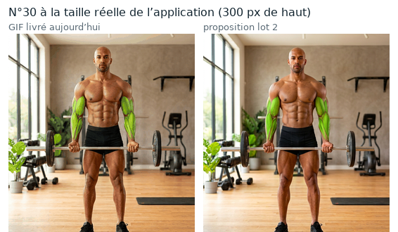
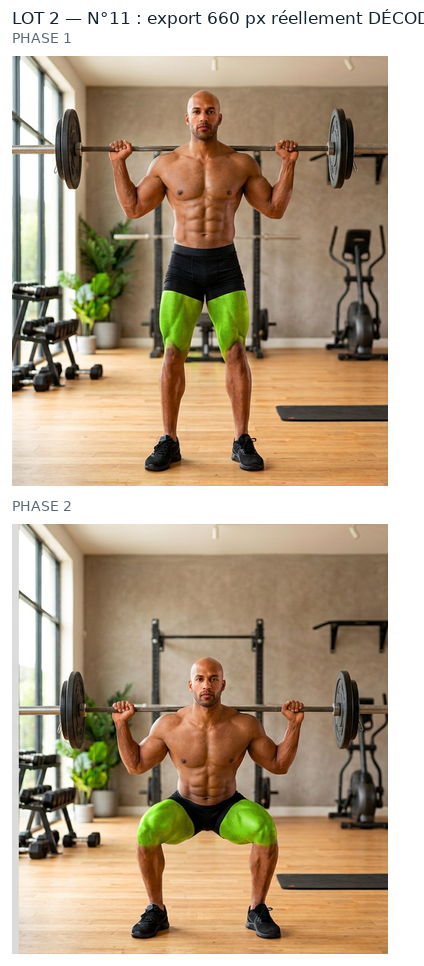
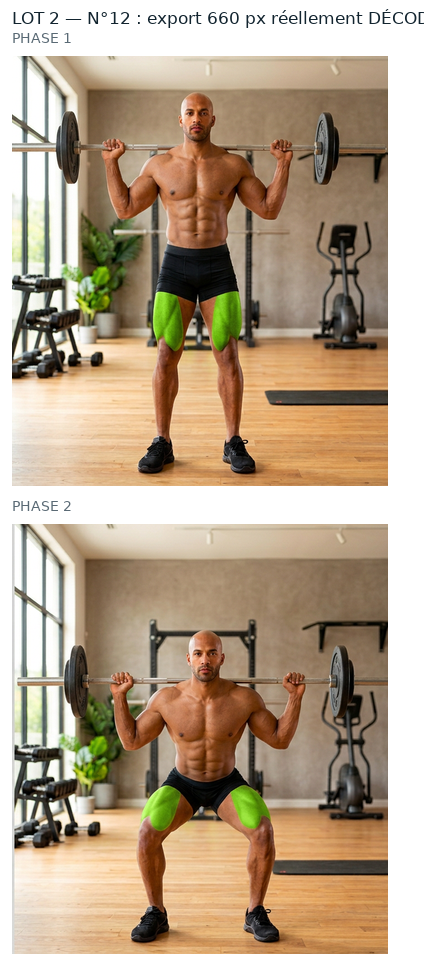
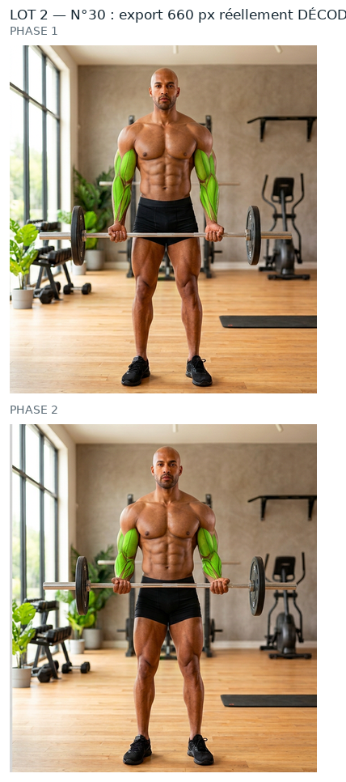
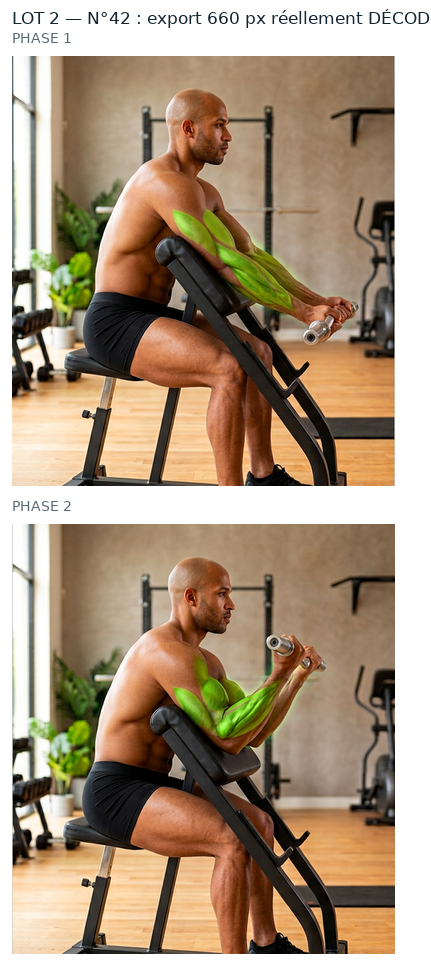

Mêmes règles que le n°44 et le lot 1 que tu as validés : source native, aucun agrandissement,
PNG de travail à la résolution de la source, vert ramené dans la famille du n°260, puis WebP animé 660 px
(+ GIF de secours). Rien n'est intégré : aucun GIF livré remplacé, APK intact, 0 image générée.
Ces quatre numéros ont un vrai intérêt : le vert y est peint sur le muscle — fessiers et
quadriceps pour les squats, biceps et avant-bras pour les curls. On voit donc si le relief,
les stries et les ombres survivent à l'export. Réponse : oui, et le contour est franc (plus d'effet
« plaque collée »). Le cadrage est exactement celui du GIF livré (décalage mesuré, pas
d'approximation).
n°11 — back squat (homme)
Vert sur les fessiers et les deux quadriceps, pendant tout le mouvement. Source native 688×768 par phase →
export 577×660 (le GIF livré fait 385×440).
Vert sur les biceps et les avant-bras des deux bras. La proposition garde les reliefs
du biceps, les stries de l'avant-bras et les reflets de peau (l'ancien rendu les écrasait).
Avant / après à la résolution native (zoom biceps)

GIF livré / proposition, taille réelle
n°42 — curl Scott barre EZ pronation (homme)
Vert sur l'avant-bras et le biceps posés sur le pupitre. Les doigts et les tendons restent nets :
le vert ne « coule » pas sur la main, la barre garde son reflet.
Ces planches montrent ce que contient réellement le WebP et le GIF de repli (fichiers
rouverts image par image), pas le PNG de travail.

n°11 — WebP + GIF décodés

n°12 — WebP + GIF décodés

n°30 — WebP + GIF décodés

n°42 — WebP + GIF décodés
Ce que j'ai écarté de ce lot (et pourquoi)
n°1 (ab wheel), 9 et 10 (extensions au banc) : dans la source native, le vert n'est
pas sur le muscle — il est sur le feuillage du décor, et la bande verte visible dans l'app
a été fabriquée après coup. Je préfère te le dire plutôt que de te livrer une retouche qui n'a
rien à retoucher.
n°218, 235, 239 : le GIF livré ne correspond pas à la planche native annoncée
(erreur de rapprochement 47 à 80 sur 255) — source à retrouver avant toute retouche, ça fera un
chantier à part.
Limites (identiques au n°44 et au lot 1)
Le GIF reste limité à 256 couleurs par image : c'est le WebP qui porte la qualité,
le GIF n'est que le filet de sécurité si la WebView refuse le WebP.
Sources natives de 768 px de haut : au-delà de 660 px d'export on n'ajoute aucun détail, seulement du poids.
Dis-moi, numéro par numéro : « 11 OK », « 12 OK », « 30 OK », « 42 OK » — ou ce qui cloche
(teinte, contour, zone trop large…). Rien ne sera intégré et aucun GIF livré ne sera
remplacé avant ton accord.
Contrôles chiffrés
Détail complet (ROI, seuils, percentiles, poids, PSNR, garantie « aucun pixel modifié hors zone ») :
evolution/media/refonte-photo/hd-2026-09-30/lot2/CONTROLES.json